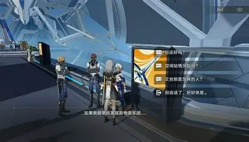

崩坏星穹铁道
游戏特色
游戏采用策略回合制，结合行动值（跑条）机制，速度决定出手频率。战斗核心在于属性克制（7大属性）与弱点击破，击破敌人韧性可打断行动并造成高额伤害。玩家可自由搭配命途（角色定位）、光锥（武器）、遗器（套装），阵容策略丰富。支持自动战斗与4倍速，日常清理体力仅需约10分钟，轻度护肝、休闲友好
 游戏官方网站
游戏官方网站
游戏特色
- 开放世界探索：玩家可以自由探索不同的星球和空间站，发现隐藏的秘密和宝藏。
- 丰富的角色系统：游戏中有多种可玩角色，每个角色都有独特的技能和故事背景。
- 多人合作模式：玩家可以与朋友组队，共同完成任务和挑战强大的敌人。
游戏截图

游戏玩法
- 合理搭配命途与元素、优化阵容、科学养成角色
- 提升基础属性，前期可优先升级，后期可突破至80级
- 提升角色战力，前期以可用为主，后期再追求毕业套装